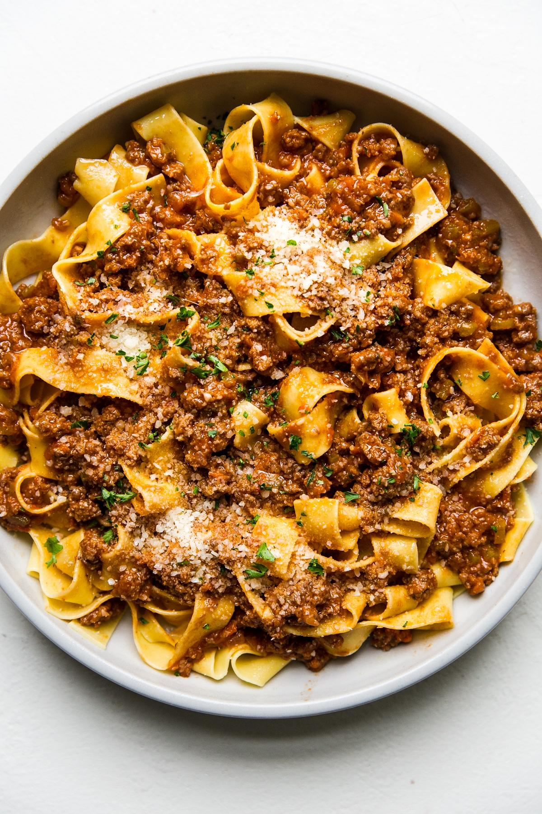

Bolognese

This recipe is via the Bon Appetit website. It's super tasty
- 1 medium onion, chopped
- 1 celery stalk, chopped
- 1 small carrot, peeled, chopped
- 3 tbsp. extra virgin olive oil
- 1 lb, ground beef chuck (20% fat), patted dry
- Kosher salt
- 3 oz. thinly sliced pancetta, finely chopped
- 1 cup dry white wine
- 1/2 cup tomato paste
- 1 bay leaf
- pinch of finely grated nutmeg
- 2 cups (or more) homemade chicken stock or low sodium chicken broth
- 1 cup whole milk
- 1 lb fresh tagliatelle or pappardelle, or dry rigatoni
- 2 oz finely grated parmesan, plus more for serving
Hope you enjoy